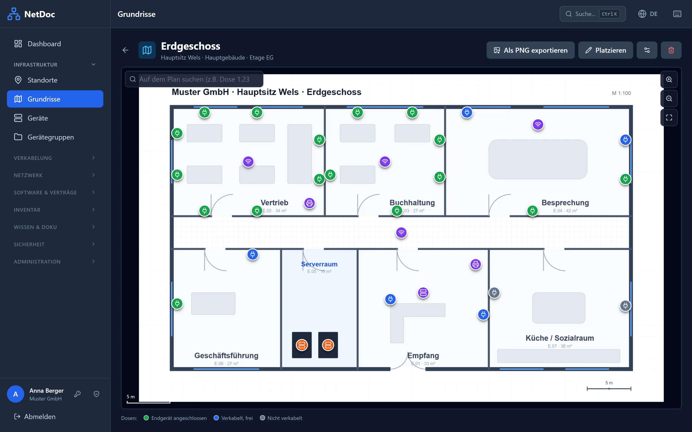
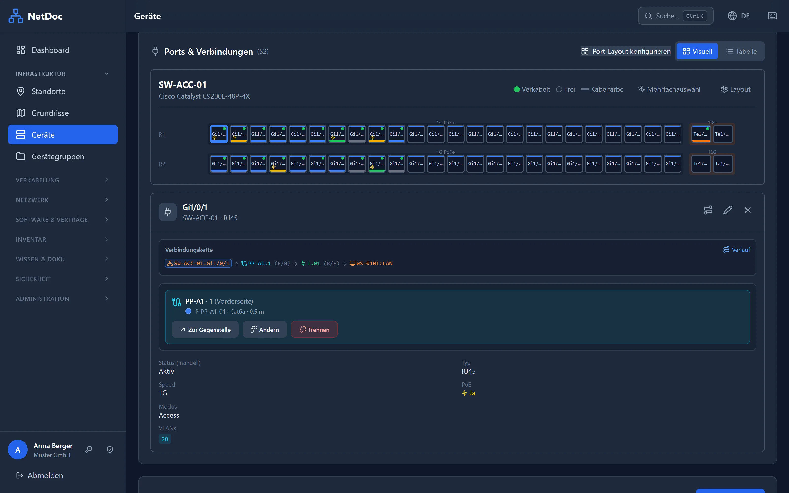
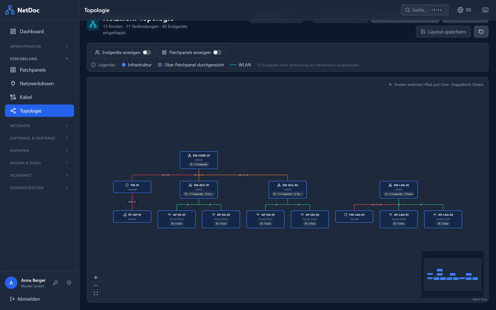
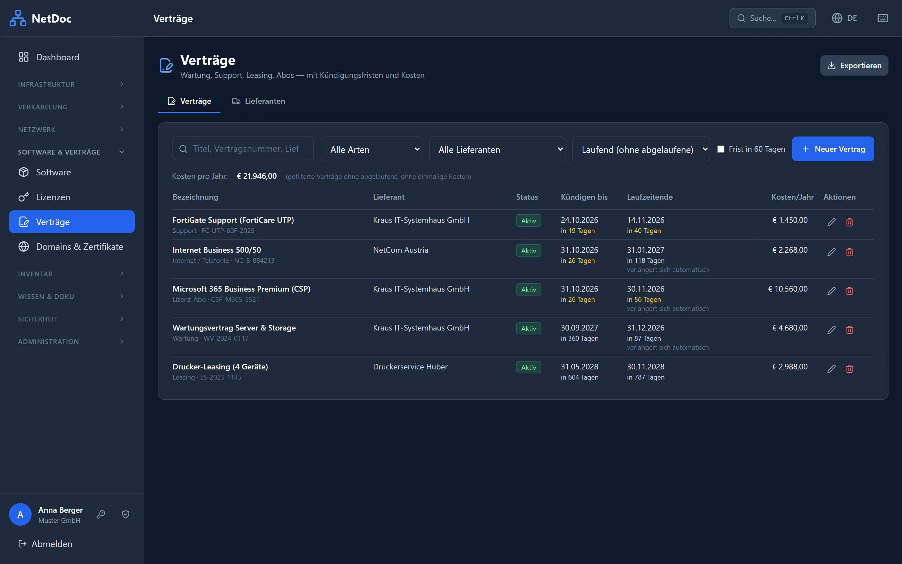
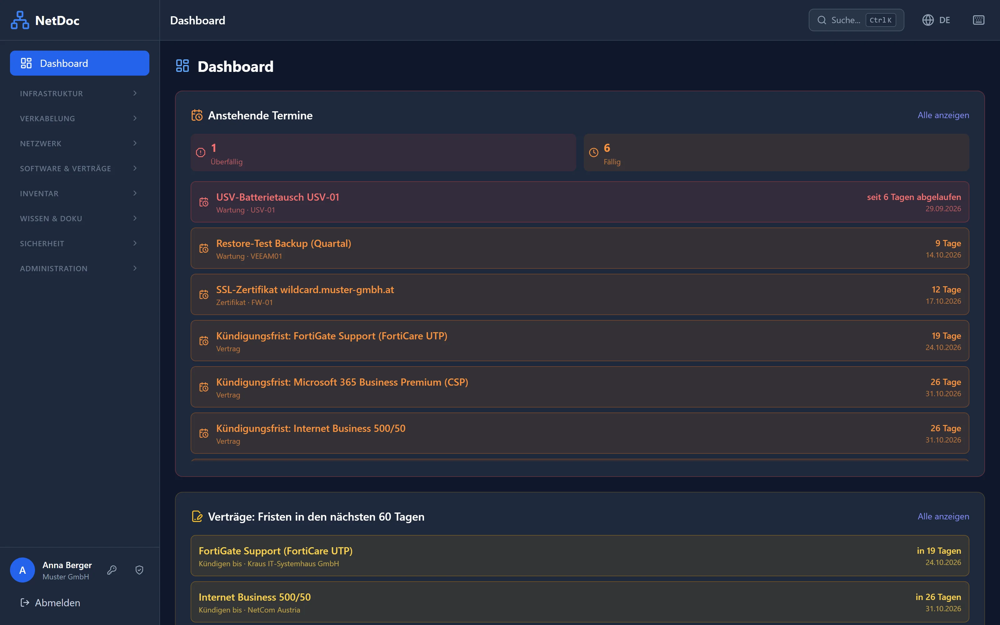

Selbst gehostet · Einmalzahlung
IT-Dokumentation, die Sie einmal kaufen – nicht jeden Monat bezahlen.
Geräte, Verkabelung bis zur Netzwerkdose, Lizenzen, Verträge und Passwörter an einem Ort. Auf Ihrem eigenen Server, in wenigen Minuten installiert.

Einmal zahlen, fertig
Kein Abo, keine Kosten pro Benutzer. Sie zahlen einmal nach Anzahl Ihrer Geräte – Updates für 12 Monate sind dabei, danach läuft Ihre Version einfach weiter.
Ihre Daten bleiben bei Ihnen
NetDoc läuft auf Ihrem Server, im eigenen Netz. Keine Cloud, kein Tracking. Verbindungen nach außen gibt es nur für Dienste, die Sie selbst einrichten – etwa E-Mail-Erinnerungen oder die Prüfung von SSL-Zertifikaten.
In Minuten startklar
Ein Befehl startet NetDoc, ein Assistent im Browser richtet es ein. Für Admins, die Dokumentation „nebenbei“ machen müssen – ohne wochenlange Einführung.
Funktionen
Alles, was eine kleine IT-Abteilung dokumentieren muss
Jede Stufe enthält alle Funktionen. Die Stufen unterscheiden sich nur in der Anzahl der Geräte.
Geräte & Racks
Inventar mit Gerätetypen, eigenen Feldern (Garantie, Kostenstelle, Inventarnummer …), Rack-Belegung und QR-Etiketten zum Ausdrucken.
Verkabelung bis zur Dose
Switch-Port → Patchfeld → Netzwerkdose → Endgerät: die ganze Strecke mit einem Klick. Bestehende Patchlisten aus Excel importieren.
Netzwerk & Topologie
VLANs, IP-Adressen, WLANs und eine automatisch erzeugte Topologie, wie Ihre Switches, Router und Access Points zusammenhängen.
Grundrisse
Gebäudeplan als Bild oder PDF hochladen und Dosen, Access Points, Drucker und Racks darauf platzieren. Nie wieder „Wo ist Dose 1.23?“
Lizenzen, Verträge & Fristen
Software-Lizenzen, Wartungsverträge mit Kündigungsfristen, SSL-Zertifikate und Domains – NetDoc erinnert Sie rechtzeitig per E-Mail.
Passwörter & Zugangsdaten
Verschlüsselte Tresore mit Rechten pro Gruppe und Zugangsdaten direkt am Gerät – dort, wo man sie braucht.
Wissen & Notfallhandbuch
Anleitungen und Checklisten in einer Wissensdatenbank. Das IT-Notfallhandbuch für Ordner, Versicherung und Prüfer entsteht als PDF auf Knopfdruck.
Mitarbeiter & Geräteausgabe
Wer hat welchen Laptop? Ausgabe und Rückgabe mit Übergabeprotokoll als PDF, Mitarbeiterliste per CSV oder Abgleich mit Microsoft Entra ID.
Rechte & Anmeldung
Benutzergruppen mit feinen Rechten, Zwei-Faktor-Anmeldung, Microsoft-Login und Active Directory. Jede Änderung im Protokoll nachvollziehbar.
Backup, Import & API
Automatische Backups und Wiederherstellung direkt in NetDoc, Import aus CSV und Excel, Export als Excel/PDF und eine REST-API für eigene Skripte.
Auch am Handy
Im Serverraum schnell nachsehen, welcher Port wohin geht: NetDoc funktioniert im Handy-Browser und lässt sich wie eine App installieren.
Volltextsuche
Eine Suche über alles: Geräte, IP-Adressen, Dosen, Notizen, Verträge und Wissensartikel.




Installation
In drei Schritten einsatzbereit
Sie brauchen einen Linux-Server oder eine VM mit Docker – 1 GB RAM und 10 GB Speicher reichen.
Herunterladen
ZIP herunterladen und auf dem Server entpacken. Es ist bewusst klein: Es enthält nur Konfiguration und Anleitung, NetDoc selbst lädt Docker beim Start automatisch.
unzip netdoc-v*.zip -d /opt
Starten
Ein Befehl lädt NetDoc und startet es samt Datenbank.
cd /opt/netdoc docker compose up -d
Einrichten
Im Browser öffnen, der Assistent fragt nach Firmenname, Admin-Konto und Lizenz. Fertig.
http://ihr-server
Preise
Einmal zahlen – nach Größe Ihres Netzwerks
Alle Preise sind Einmalzahlungen inklusive MwSt. Gezählt werden die dokumentierten Geräte.
Kostenlose Excel-Vorlage: Patchliste
Switch-Port, Patchfeld, Dose, Endgerät, VLAN, Kabeltyp – alles in einer Liste, mit Auswahllisten und Beispielzeilen. Funktioniert auch ohne NetDoc; NetDoc importiert sie später direkt.
Fragen
Häufige Fragen
Was zählt als Gerät?
Jedes Gerät, das Sie in NetDoc anlegen: Switches, Router, Server, PCs, Drucker, Access Points usw. Patchfelder, Netzwerkdosen, Kabel, Racks, Software und Verträge zählen nicht.
Was passiert, wenn ich das Limit erreiche?
Alles bleibt lesbar und bearbeitbar – nur neue Geräte lassen sich nicht mehr anlegen. Mit einem größeren Lizenzschlüssel geht es sofort weiter, ohne Neuinstallation.
Was passiert nach den 12 Monaten Updates?
Ihre installierte Version läuft unbegrenzt weiter, ohne Einschränkung. Nur für neuere Versionen ist eine Verlängerung der Updates nötig.
Kann ich später auf eine größere Stufe wechseln?
Ja. Sie zahlen nur die Differenz zur größeren Stufe: Nach einer kurzen E-Mail bekommen Sie einen persönlichen Gutscheincode und nach dem Kauf einen neuen Schlüssel, der den bisherigen ersetzt.
Wie bekomme ich meinen Lizenzschlüssel?
NetDoc selbst laden Sie jederzeit kostenlos herunter. Nach dem Kauf erhalten Sie Ihren persönlichen Lizenzschlüssel per E-Mail, in der Regel innerhalb von 24 Stunden. Eingetragen wird er im Setup-Assistenten oder später unter Einstellungen → Lizenz.
Was brauche ich für die Installation?
Einen Linux-Server oder eine VM mit Docker und Docker Compose (getestet mit Ubuntu und Debian), 1 GB RAM und 10 GB Speicher. Läuft auf Intel/AMD und ARM. Eine Internetverbindung ist nur zum Herunterladen und für Updates nötig.
Wo liegen meine Daten?
Ausschließlich auf Ihrem Server. NetDoc schickt keine Daten an uns oder an Dritte. Passwörter und Zugangsdaten werden verschlüsselt gespeichert.
Wie funktionieren Updates?
Mit zwei Befehlen: docker compose pull und docker compose up -d. Datenbank-Änderungen spielt NetDoc beim Start automatisch ein. Vorher ein Backup anzulegen, geht mit einem Klick unter Einstellungen → Backup.
Gibt es Support?
Bei Fragen zur Installation und bei Fehlern helfen wir per E-Mail an support@getnetdoc.com – nach bestem Bemühen, ohne garantierte Reaktionszeiten. Die ausführliche Anleitung liegt jedem Download bei.
Kann ich NetDoc vorher ausprobieren?
Ja – die Free-Version hat alle Funktionen und ist bis 25 Geräte dauerhaft kostenlos. Wenn sie Ihnen gefällt, tragen Sie einfach einen Lizenzschlüssel ein, Ihre Daten bleiben erhalten.
Gibt es eine Rückerstattung?
Wenn NetDoc nicht passt, erstatten wir den Kaufpreis innerhalb von 14 Tagen ohne Angabe von Gründen.
Fangen Sie heute an – kostenlos
Bis 25 Geräte für immer gratis. Wenn Ihr Netzwerk wächst, wächst NetDoc mit.